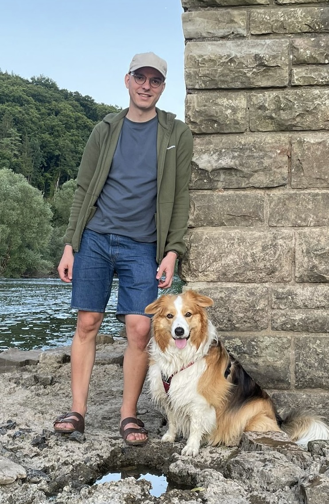

Maxime Jakubowski

Welcome to my personal website. It will be kept up-to-date as often as I manage. At this moment, this website is mainly used to post short blog posts about (hopefully) interesting topics that are touched upon in my research.
About me
Recently, I obtained my PhD in computer science, which was within a joint program with UHasselt and VUB through the Flanders AI Research Program. Currently, I'm working as a PostDoc researcher in the Databases and Artificial Intelligence research unit at TU Wien.
Within my field of study I am mainly interested in (knowledge) graph data management and provenance in databases. At the moment, I'm mostly working on fundamental aspects of SHACL and provenance. However, I am continually figuring out exactly what I find interesting.
As a researcher, I'm naturally curious and interested in how things work. My scope of interest is wide and sparse. At this stage of my life I am still figuring out what unites them — if they unite at all. A list of things I like to spend my time doing:
- cooking
- raising our dog, Tofu
- hiking
This list is incomplete and in no particular order. I'm also not claiming to be an expert, or even good, at any of these things. My time is spend mainly by pursuing my interests slowly. The only reason I do any of this is because I want to.
Online presence
You can find me in the following places:
- GitHub
- University
- maxime.jak at gmail dot com
What to expect from this in the future
Please do not expect anything.
Updates
- 2024-06-01 My PhD: Shapes Constraint Language
- 2024-05-29 Provenance and SHACL
- 2024-05-29 SHACL in a nutshell
- 2024-05-29 Expressiveness of SHACL Features
- 2024-05-29 Recursion for SHACL
On LLMs
All content is written by me, a human. No LLMs were used in the creation of the content for this website. Importantly, all ideas and opinions as my own, or developed together with my colleagues.